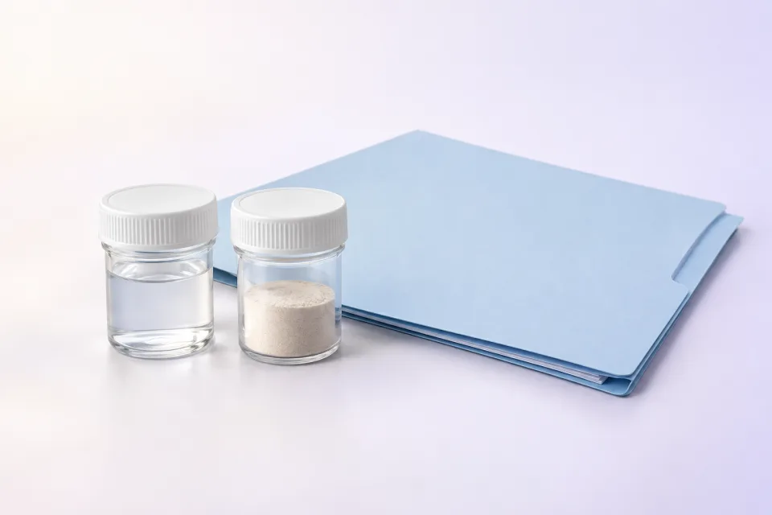

Hojas de residuos · FDSR
Construimos la FDSR del residuo con antecedentes trazables para respaldar su manejo y traslado.
Leer más sobre Hojas de residuos · FDSR
Partimos del proceso generador, la composición conocida, contaminantes posibles y manejo previsto. La HDS del producto original puede ayudar, pero no describe por sí sola el residuo resultante.
Qué recibesUna FDSR definida por el alcance y los antecedentes disponibles, con brechas o caracterización adicional identificadas antes de emitir la versión final. La revisión interna deja claro qué información sustenta la clasificación.
Consultar este servicio ↗